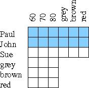

sys.path.append('/home/staff/cs170/sagelogic/')
import propcalc
(In other installations, the module is imported with: import sage.logic.propcalc as propcalc.)
The logic module uses the following operators:
| not | ~ |
| and | & |
| or | | |
| xor (exclusive or) | ^ |
| implies | -> |
| equivalent | <-> |
f = propcalc.formula("a&b")
f.truthtable() ## Producing a truthtable
f.is_satisfiable() ## whether at least one row that results in True
f.is_tautology() ## whether all rows in the truthtable result in True
Print all rows in the truthtable that result in True.
f.truthtable().true_rows()
(Note: the "true_rows()" function is only available on Socweb. If you are
using this on your own computer, you'll need something like this instead:
table = f.truthtable().get_table_list()
table[0].append('value')
for row in table[1:]:
if row[-1] == True:
print table[0]
print row
Checking whether two expressions are equivalent:
f = propcalc.formula("~(a & b) <->(~ a | ~ b)")
f.is_tautology()
1) For each expression on the left, can you find the one on the right that is equivalent? Check your results with Python.
| a | a | ~ (a | ~ b) |
| a & b | ~ b | ~ a |
| ~ a & b | a & (a | b) |
| ~ (a & b) | (~ a) & (~ b) |
| ~ (a | b) | ~ (~ a | ~ b) |
| a & b & c | (c & a)|(a & b) |
| a & (b | c) | (a | c) & (b | c) |
| (a & b) | c | c & a & b |
2) A logic puzzle: Whom to invite for the party?
To solve this puzzle, write a formula which combines all the conditions. For example, the first condition is: (susan -> john), or abbreviated as (s -> j). Combine the conditions using &. Then find all the rows in the truthtable which result in true. What is the answer of the puzzle that can be read from the truthtable?
3) Another logic puzzle:
Because the truthtable for this one is quite big, it is best to print only the rows that result in True.
4) Knights and Knaves:
The logician Raymond Smullyan describes an island with two kinds of people: knights and knaves. Knights always tell the truth, whereas knaves always lie. What are the following two people, knights or knaves?
A says: B is a knight.
B says: A and I are of opposite type.
Hint: you can model this as four variables: "a speaks the truth", "a lies", "b speaks the truth", "b lies".
5) A logic grid puzzle:
|

| |
Logic grid puzzles consist of a few clues and a grid that can be used while solving the puzzle with pen and paper. Try it!
Optional: attempt a Boolean logic solution (which may be more difficult than a solution with pen and paper). In Boolean logic each of the blue coloured squares in the grid needs to become a variable ("p60: Paul weighs 60", "p70: Paul weighs 70", etc). How many rows does a truthtable with 12 variables have?
All of the conditions (even the ones about Sue) need to be written in terms of Paul and John. The implicit conditions (someone can only have one hair colour, one weight) also need to be stated.
Since your formula won't fit on one line: you can continue it to the next line if you put a backslash at the end of the first line.
This puzzle shows the limits of Boolean logic. For more complex puzzles one needs a more higher level logic programming language (something like Prolog).
| Python | mathematical notation |
|---|---|
| ints = Set(range(1,11)) | {x | 0 < x < 11 } |
| Set([2*x for x in range(1,6)]) | {y | y = 2x; 0 < x < 6 } |
| Set([2*x for x in range(1,20) if x%3 == 0]) | {y | y = 2x; 0 < x < 20; 3 divides x } |
| Set([sqrt(x) for x in range(1,6)]) | {y | y = √x; 0 < x < 6;} |
| Set([x for x in range(1,11) for y in range(2,x) if x % y ==0]) | {x | 0 < x < 11; ∃y >1: y divides x } |
6) Try the examples above. Can you find a verbal description for each of the sets?
7) Define the following sets:
a) Numbers between 1 and 100 which are divisible by 2, 3 and 7.
b) Rational numbers (fractions) with a numerator between 1 and 10
and a denominator between 1 and 5. All fractions should be reduced.
c) Prime numbers below 10. (Use the set defined above and set operators.)